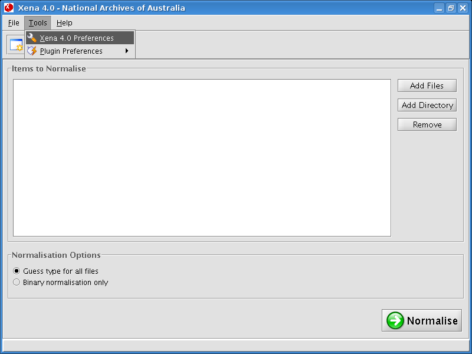

Specify where normalised files should be saved after processing. Select Tools -> Xena 4.0 Preferences from the main menu.

Use the Browse button to open a file browser and navigate to the location where normalised files should be saved.
The Preferences box may also be used to set a location for Xena to save its log file. Xena will continue to create a log if this preference is left blank; however, specifying a location here may make locating the log file easier at a later date.